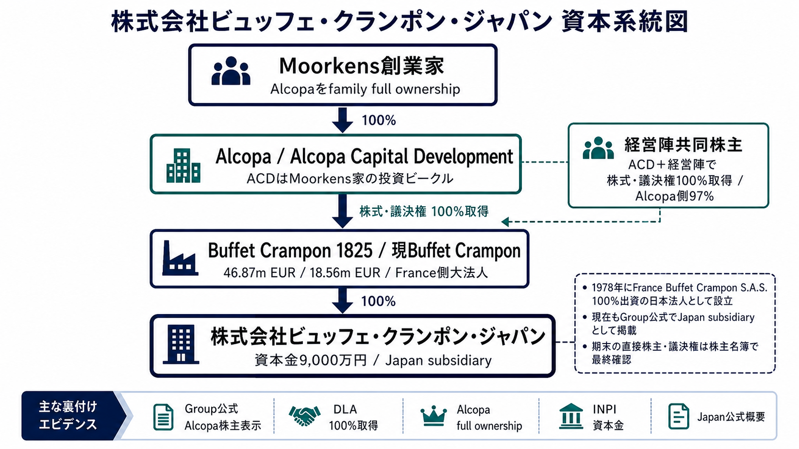

本メモは、法人税法67条の特定同族会社該当性について、条文要件 -> 一次ソース事実 -> 短い引用 -> 認定 -> あてはめ -> 結論の順に検討する。中心論点は、Buffet Crampon Japanが一の株主等グループにより50%超支配されるか、被支配会社でない法人を除外しても支配が残るか、さらに大法人による完全支配関係が認められるかである。
暫定結論
公開一次ソースだけで見る限り、Buffet Crampon Japanは特定同族会社に該当する方向が強い。ALCOPA関係は相当程度解明できており、Group公式のAlcopa株主表示、Alcopa投資先ページ、ACD/Moorkens家のM&A資料、Alcopa family full ownershipがそろう。最終的には、法67条8項に合わせて期末株主名簿、議決権台帳、期末資本関係図、EUR/JPY TTMで証拠化する。
弱まる条件
直接株主名簿、種類株式、議決権配分、France側からJapanまでの期末100%連鎖、Alcopa/ACD/経営陣共同株主のcap tableが公開資料と異なる場合は結論を再判定する。ただし、現時点で非該当に倒す一次ソースは確認できない。
| 判断対象 | 判定 | 一次ソースとの対応 |
|---|---|---|
| 公開一次ソースで確認できる現在の判定方向 | 該当方向が強い | 日本法人の資本金9,000万円、Group内子会社表示、France側大法人資本金、Alcopa/ACD/Moorkens家系統まで確認できる上位支配関係を総合する。Japan公式企業概要（資本金9,000万円・本店等） / Group公式Presence（Japanをsubsidiaryとして掲載） / Group公式At a glance（株主としてAlcopaを表示） / Alcopa公式沿革（Moorkens創業家によるfull ownership） / INPI/RNE Buffet Crampon 1825 p.1（SASU・単一株主・資本金46.87m EUR） / INPI/RNE 現Buffet Crampon p.1（資本金18.56m EUR） / DLAプロフィール（ACD＋経営陣が株式・議決権100%取得） |
| ALCOPA関係の資本系統 | 概ね解明済み | Group公式は株主をAlcopaと示し、Alcopa投資先ページは2024年以降のCurrent投資先、DLAはACD＋経営陣による株式・議決権100%取得、Alcopa沿革は創業家によるfull ownershipを示す。Group公式At a glance（株主としてAlcopaを表示） / Alcopa投資先ページ（Buffet Cramponは2024年以降のCurrent投資先） / DLAニュース（ACDはMoorkens家の投資ビークル） / DLAプロフィール（ACD＋経営陣が株式・議決権100%取得） / Alcopa公式沿革（Moorkens創業家によるfull ownership） |
| 直接株主・議決権の期末証拠 | 最終証拠化事項 | 未解明なのは、対象事業年度末の直接株主名簿・議決権台帳・France側からJapanまでの完全支配連鎖を内部資料で固定する点である。法人税法67条・66条（特定同族会社・大法人完全支配の条文） / 2ChatGPT確認メモ（一次ソース再確認と残課題） |
| 留保金課税額の発生 | 別計算 | 特定同族会社該当性と、所得等の金額・留保控除額に基づく実際の税額計算は分ける。法人税法67条・66条（特定同族会社・大法人完全支配の条文） |

Alcopa公式沿革：Moorkens創業家によるfamily full ownership Group公式At a glance：株主としてAlcopaを表示 Alcopa投資ページ：2024年以降のcurrent investment DLAニュース：ACDはMoorkens家の投資ビークル DLA Piper profile：ACD及び経営陣が議決権100%取得 Alcopa Activity Report p.12：Alcopa側97%保有 Alcopa Activity Report p.13：management co-shareholder INPI/RNE Buffet Crampon 1825：SASU・単一株主・資本金46.87m EUR INPI/RNE 現Buffet Crampon：資本金8.56m EUR BODACC合併公告：Buffet Crampon再編の公告 Group公式Presence：Japanをsubsidiaryとして掲載 Japan公式沿革：France Buffet Crampon S.A.S. 100%出資で日本法人化 Japan公式企業概要：資本金9,000万円・本店等| 要件 | 短い条文引用 | この案件での読み方 | 一次ソース |
|---|---|---|---|
| 特定同族会社と税額発生 | 法67条1項は、内国法人である特定同族会社の各事業年度の留保金額について、通常の法人税額に加算する構造を置く。 | まず該当性を判定し、その後に留保金課税額を別計算する。資本金1億円以下という事実だけで検討を終えない。 | 法人税法67条・66条（特定同族会社・大法人完全支配の条文） |
| 被支配会社 | 法67条2項・令139条の7は、一の株主等とその関係者により株式・出資・議決権等の50%超を支配される会社を基礎にする。 | JapanがFrance側親会社から直接又は間接に50%超支配されているかを、沿革・現行表示・期末資料で確認する。 | 法人税法67条・66条（特定同族会社・大法人完全支配の条文） / 法人税法施行令139条の7・4条の2（被支配会社・完全支配関係） |
| 被支配会社でない法人の除外 | 法67条1項括弧書きと基通16-1-1は、判定株主から被支配会社でない法人を除外してもなお被支配会社かを問題にする。 | 公開一次ソース上は、Alcopaが創業家full ownershipの投資会社であり、ACDはMoorkens家の投資ビークル、かつACD＋経営陣でBCGの株式・議決権100%を取得している。したがって、広く分散保有された非被支配会社を除外すると支配が消える、という構造ではない方向が強い。 | 法人税法67条・66条（特定同族会社・大法人完全支配の条文） / 国税庁通達16-1-1（被支配会社でない法人の除外） / Alcopa公式沿革（Moorkens創業家によるfull ownership） / DLAニュース（ACDはMoorkens家の投資ビークル） / DLAプロフィール（ACD＋経営陣が株式・議決権100%取得） |
| 判定時点 | 法67条8項は、該当性を各事業年度終了時の現況で判定する。 | 公開資料が該当方向でも、最終結論は対象事業年度末の株主・議決権・資本関係で固定する。 | 法人税法67条・66条（特定同族会社・大法人完全支配の条文） |
| 大法人・完全支配関係 | 法66条5項2号、法2条12号の7の6、令4条の2により、資本金5億円以上の法人等による完全支配関係が問題となる。 | France側親会社のEUR建資本金が5億円相当を大幅に超えるか、かつJapanまで100%連鎖するかを確認する。 | 法人税法67条・66条（特定同族会社・大法人完全支配の条文） / 法人税法施行令139条の7・4条の2（被支配会社・完全支配関係） |
| 外国法人資本金の円換算 | 基通16-5-2は、外国法人の資本金を対象法人の事業年度終了日のTTMで円換算する扱いを示す。 | Buffet Crampon 1825及び現Buffet CramponのEUR建資本金を、期末TTMで円換算して5億円基準を証拠化する。 | 国税庁通達16-5-1・16-5-2（外国法人資本金の期末TTM換算） |
| 年度 | 一次ソース引用・事実認定 | 判定での意味 | リンク |
|---|---|---|---|
| 法人実体 | 引用: Buffet Crampon Japan公式企業概要は、株式会社ビュッフェ・クランポン・ジャパンの資本金を9,000万円と示す。 | 内国法人・資本金1億円以下という入口事実。ただし大法人完全支配関係の追加判定へ進む。 | Japan公式企業概要（資本金9,000万円・本店等） |
| 日本法人の100%沿革・現行子会社性 | 引用: 公式沿革は1978年のFrance Buffet Crampon S.A.S. 100%出資日本法人化を示し、Group公式PresenceはJapanをsubsidiaryとして表示する。 | Japanが単なる代理店ではなく、Group内の日本子会社として扱われていることを示す。 | 公式沿革（1978年にFrance Buffet Crampon S.A.S. 100%出資日本法人化） / Group公式Presence（Japanをsubsidiaryとして掲載） |
| 現行グループ株主 | 引用: Buffet Crampon Group公式At a glanceは、Buffet Crampon ShareholdersとしてAlcopaを掲げる。 | Alcopaが上位株主として明示され、ALCOPA関係は単なる推測ではなくGroup公式資料で確認できる。 | Group公式At a glance（株主としてAlcopaを表示） |
| Alcopa投資先 | 引用: Alcopa公式投資先ページは、Buffet CramponをCurrent投資先とし、With Alcopa since 2024と示す。 | 2024年以降、Buffet CramponがAlcopa傘下の現行投資先であることを支える。 | Alcopa投資先ページ（Buffet Cramponは2024年以降のCurrent投資先） |
| ACDとMoorkens家 | 引用: DLA Piper newsは、Alcopa Capital DevelopmentをMoorkens家の投資ビークルと説明し、Buffet Crampon Group買収を示す。 | Alcopa側支配が、広く分散した上場株主ではなく、Moorkens家系の投資ビークルに結びつくことを示す。 | DLAニュース（ACDはMoorkens家の投資ビークル） |
| 株式・議決権100%取得 | 引用: DLA Piper profileは、Alcopa Capital Developmentと経営陣によるBuffet Crampon Groupの株式・議決権100%取得案件と示す。 | 上位支配は50%超どころか、案件単位では株式・議決権100%取得として説明される。 | DLAプロフィール（ACD＋経営陣が株式・議決権100%取得） |
| Alcopa内部構造・現在性 | 引用: Alcopa公式Historyは現在も創業家3・4世代のstewardshipとfamily full ownershipを示し、2025 Activity Reportは100% family owned business及びCAFがfamily shareholdingを代表することを示す。2026年Whitestone開示もAlcopaをMoorkens family holdingと扱い、NBB 2025連結計算書はACDがAlcopa NVの100%直接参加会社であることを示す。 | 公開資料上は、Alcopa/ACDを広く分散保有された「被支配会社でない法人」として除外する根拠は乏しい。むしろ、Moorkens創業家支配会社と強く推認される。ただし、KBO・NBB・LEIではAlcopa本体の全株主名簿・UBO自然人・親族関係までは確認できないため、最終表現は「強い推認」に止める。 | Alcopa公式History（創業家3・4世代・family full ownership） / Alcopa 2025 Activity Report p.21（CAFがfamily shareholdingを代表） / NBB 2025連結計算書 p.12（ACDはAlcopa NVの100%直接参加会社） / Whitestone 2026開示（AlcopaはMoorkens family holding） / Alcopa現在所有・内部構造の深掘り追補HTML |
| France側大法人 | 引用: INPI/RNEは、Buffet Crampon 1825をSASU・単一株主・資本金46,870,893.60 EUR、現Buffet Cramponを資本金18,561,888.28 EURと示す。 | France側には5億円基準を大幅に超える外国大法人が存在する。期末TTMで円換算して証拠化する。 | INPI/RNE Buffet Crampon 1825 p.1（SASU・単一株主・資本金46.87m EUR） / INPI/RNE 現Buffet Crampon p.1（資本金18.56m EUR） |
| 2024年再編 | 引用: 旧Buffet CramponのINPI/RNE及びBODACCは、2024年12月31日のfusion/radiationを示す。 | France側の法人再編により、どの年度末でどの法人を親会社として見るかを分ける必要がある。 | INPI/RNE 旧Buffet Crampon p.1（2024年12月31日fusion/radiation） / BODACC合併公告 p.1（Buffet Crampon再編の公告） |
PDF資料は、原本PDFを複製したハイライトPDFに直接リンクしている。ページ指定はブラウザ又はPDFビューアの挙動に依存するが、リンク先ファイル自体はハイライト済み原本である。
結論: 公開資料上はYes。ただし、法的株主名簿レベルでは未完。Alcopa公式Historyは、現在も創業家3・4世代のstewardship下でfamily full ownershipを維持すると示す。2025 Activity Reportは100% family owned business及びCAF/Conseil de l’Actionnariat Familialがfamily shareholdingを代表することを示す。2026年1月のWhitestone開示はAlcopaをMoorkens family holdingと表現し、NBB 2025連結計算書はACDがAlcopa NVの100%直接参加会社であることを補強する。
Buffet Crampon Japanは、Japan公式企業概要で日本法人として確認でき、Besson公式沿革ではFrance Buffet Crampon S.A.S.による100%出資日本法人化が示され、Group公式PresenceでもJapanがsubsidiaryとして表示されている。これらは、一の株主等グループによる50%超支配を強く示す事実である。
ただし、法67条8項の判定時点は対象事業年度終了時である。したがって、最終的には対象期末の直接株主名簿、議決権台帳、種類株式情報で、公開資料と同じ支配関係が存在したことを確認する。
Buffet案件では、Alcopa、Alcopa Capital Development、経営陣共同株主の位置づけが中心である。ただし、ここは未解明ではない。Group公式は株主をAlcopaと示し、AlcopaはBuffet CramponをCurrent投資先として示し、DLA資料はACDをMoorkens家の投資ビークルとし、ACD＋経営陣による株式・議決権100%取得を示す。さらにAlcopa公式沿革は創業家によるfull ownershipを示す。
| 中間法人・上位者 | 一次ソース上の支配事実 | 除外テスト上の評価 |
|---|---|---|
| 直接又は中間親会社 Buffet Crampon | 現Buffet Cramponは資本金18,561,888.28 EUR。Group公式ではJapanをsubsidiaryとして表示。INPI/RNE 現Buffet Crampon p.1（資本金18.56m EUR） / Group公式Presence（Japanをsubsidiaryとして掲載） | 資本金5億円相当超の大法人方向。被支配会社でない法人として除外する根拠は乏しい。 |
| Buffet Crampon 1825 | Buffet Crampon 1825はSASU、資本金46,870,893.60 EUR、単一株主構造。INPI/RNE Buffet Crampon 1825 p.1（SASU・単一株主・資本金46.87m EUR） | 現Buffet CramponのPresidentであり、France側支配連鎖を補強する。期末資本関係図で連鎖を固定する。 |
| Alcopa / Alcopa Capital Development | Group公式が株主をAlcopaと掲げ、AlcopaはCurrent投資先としてBuffet Cramponを掲載。ACDはMoorkens家の投資ビークルで、ACD＋経営陣によるBCG株式・議決権100%取得が公表されている。Group公式At a glance（株主としてAlcopaを表示） / Alcopa投資先ページ（Buffet Cramponは2024年以降のCurrent投資先） / DLAニュース（ACDはMoorkens家の投資ビークル） / DLAプロフィール（ACD＋経営陣が株式・議決権100%取得） | ALCOPA関係は概ね解明済み。上位に広く分散保有された非被支配会社が介在する構造ではなく、除外テストにより非該当へ倒す根拠は弱い。 |
| Alcopa創業家・経営陣共同株主 | Alcopa公式沿革は創業家によるfull ownershipを示す。Activity Reportはmanagement co-shareholder及びAlcopa側97%を示す。Alcopa公式沿革（Moorkens創業家によるfull ownership） / Alcopa Activity Report p.12（Alcopa側97%保有） / Alcopa Activity Report p.13（management co-shareholder） | 経営陣共同株主の詳細割合は最終確認対象だが、Alcopa側97%及びfamily full ownershipから、50%超支配は強く維持される。 |
したがって、被支配会社でない法人を除外した結果としてJapanが被支配会社でなくなる、という積極根拠は確認できない。むしろ、Alcopa/Moorkens家系統の上位支配、France側大法人、JapanのGroup subsidiary表示を合わせると、公開一次ソース上は該当方向が強い。
Buffet Crampon 1825の資本金46,870,893.60 EUR及び現Buffet Cramponの資本金18,561,888.28 EURは、通常のEUR/JPY水準で5億円を大幅に超える。基通16-5-2に従い、対象事業年度終了日のTTMで円換算資料を保存すれば、大法人該当性は強く支えられる。
残る確認事項は、France側大法人からBuffet Crampon Japanまでの完全支配関係が、対象事業年度終了時に切れていないことの直接証拠である。公開一次ソース上の資本系統はかなり解明済みであり、外部提出用には期末資本関係図又は別表二相当資料で最終補強する。
| 年度末 | 結論 | 理由 | 未確認条件 |
|---|---|---|---|
| 2024年10月現在 | 入口事実確認 | Japan公式企業概要により、内国法人・資本金9,000万円の事実を確認。Japan公式企業概要（資本金9,000万円・本店等） | この日付は会社概要の現在表示であり、税法上の判定日は対象事業年度末。 |
| 2024年12月31日 | 再編証拠あり | 旧Buffet Cramponのfusion/radiationとBODACC公告を確認。INPI/RNE 旧Buffet Crampon p.1（2024年12月31日fusion/radiation） / BODACC合併公告 p.1（Buffet Crampon再編の公告） | Japanの当該事業年度末と一致するか、親会社法人を期末で確認する。 |
| 2025年以降 | ALCOPA系統確認済み | Group株主Alcopa、Alcopa投資先化、ACD＋経営陣による株式・議決権100%取得、Alcopa family full ownershipを確認。Group公式At a glance（株主としてAlcopaを表示） / Alcopa投資先ページ（Buffet Cramponは2024年以降のCurrent投資先） / DLAプロフィール（ACD＋経営陣が株式・議決権100%取得） / Alcopa公式沿革（Moorkens創業家によるfull ownership） | 取得日、効力発生日、対象事業年度末の直接株主名簿で最終固定する。 |
| 対象事業年度終了時 | 最終判定日 | 法67条8項により事業年度終了時の現況で判定。法人税法67条・66条（特定同族会社・大法人完全支配の条文） | 株主名簿、議決権台帳、資本関係図、期末TTMを保存する。 |
公開一次ソース、登記系PDF及びM&A公表資料に基づく限り、株式会社ビュッフェ・クランポン・ジャパンは、France側Buffet Cramponグループを通じて一の株主等グループによる支配を受けている。上位関係についても、Group公式資料は株主をAlcopaと示し、Alcopa公式資料はBuffet Cramponを2024年以降のCurrent投資先とし、DLA資料はAlcopa Capital DevelopmentをMoorkens家の投資ビークルとしたうえで、ACD及び経営陣によるBuffet Crampon Groupの株式・議決権100%取得を示している。さらにAlcopa公式沿革及び2025 Activity Reportは、現在もMoorkens創業家系のfamily full ownership及びCAFによるfamily shareholding governanceを示し、2026年Whitestone開示もAlcopaをMoorkens family holdingと扱う。したがって、被支配会社でない法人を除外しても非該当に倒す積極根拠は確認できず、France側法人のEUR建資本金も5億円相当を大きく超えるため、特定同族会社該当方向で整理するのが相当である。もっとも、法人税法67条8項の判定は対象事業年度終了時の現況によるため、期末株主名簿、議決権台帳、資本関係図及び期末TTMにより最終確認する。
本HTMLは、KTM Japan参照HTMLの構造に合わせて、条文要件と一次ソース事実を対応させた検討用ドラフトである。PDF資料は原本複製にハイライト注釈を付したファイルへ直接リンクしている。